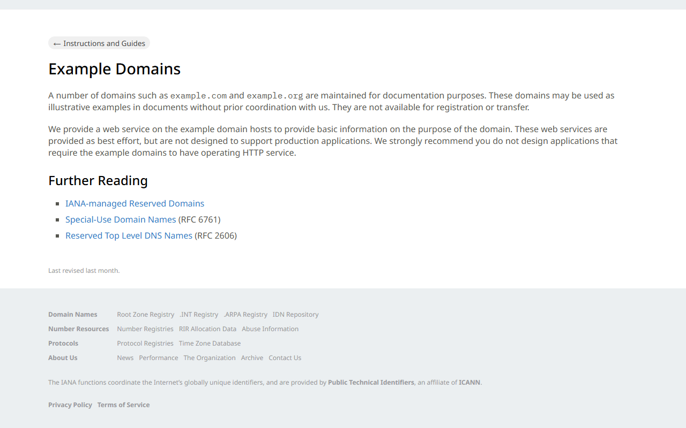

#1
Objectively Verified Issue
High
Confidence: 100%
Score: 91.0
Failed Task Execution: Scroll to the footer and locate the Customer Support, Help C
During testing for persona 'Jordan - First-Time Exploratory Visitor', task 'task_1_3' failed to complete. Maximum action limit (8) reached without meeting success criteria.
Reproduction Steps
- Start at URL: https://example.com/
- Step 1: Execute scroll on 'page' (Scroll down to browse available items and observe layout.)
- Step 2: Execute scroll on 'page' (Scroll down to browse available items and observe layout.)
- Step 3: Execute scroll on 'page' (Scroll down to browse available items and observe layout.)
- Step 4: Execute scroll on 'page' (Scroll down to browse available items and observe layout.)
- Step 5: Execute scroll on 'page' (Scroll down to browse available items and observe layout.)
- Step 6: Execute scroll on 'page' (Scroll down to browse available items and observe layout.)
- Step 7: Execute scroll on 'page' (Scroll down to browse available items and observe layout.)
- Step 8: Execute scroll on 'page' (Scroll down to browse available items and observe layout.)
Supporting Evidence
Task execution status: FAILUREError observed: Maximum action limit (8) reached without meeting success criteria.
Visual Evidence
 task_1_3_step0_baseline.png
task_1_3_step0_baseline.png
task_1_3_step1.png task_1_3_step2.png
task_1_3_step2.png task_1_3_step3.png
task_1_3_step3.png task_1_3_step4.png
task_1_3_step4.png task_1_3_step5.png
task_1_3_step5.png task_1_3_step6.png
task_1_3_step6.png task_1_3_step7.png
task_1_3_step7.png task_1_3_step8.png
task_1_3_step8.png
Recommended Fix: Ensure the target interaction element is consistently rendered, accessible in the DOM, and that navigation paths are clearly discoverable by users.
Expected Benefit: Allows users to complete this essential journey without getting blocked or abandoning the workflow.